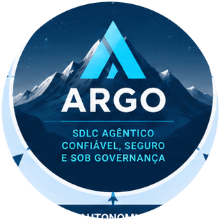
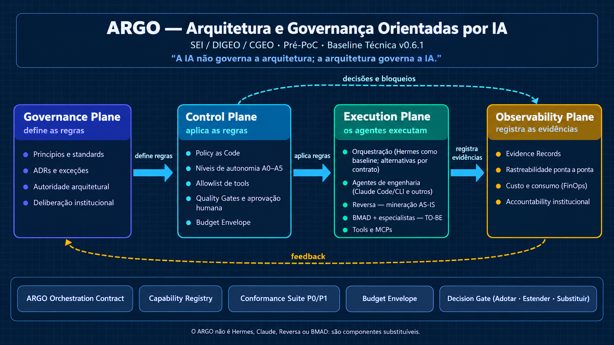
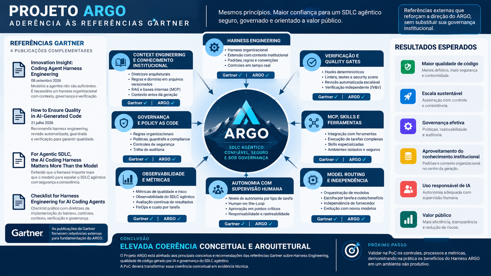
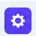
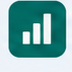

Pitch · Projeto ARGO v0.6
Arquitetura e Governança Orientadas por IA: o framework institucional de Harness Engineering para a SEI / DIGEO / CGEO.
Um modelo isolado não nasce sabendo o que a instituição exige
Compliance, políticas e critérios de qualidade não vêm no modelo
Sistemas, integrações e decisões históricas ficam fora do contexto
Sem RBAC, sem ferramentas autorizadas, sem limites de ação
Nenhum rastro de quem decidiu, com qual ferramenta e por quê
Consumo sem teto, sem FinOps, sem previsibilidade orçamentária
Ninguém no circuito quando a ação é crítica
A mesma IA, operando sob regras, gates e evidências
O Harness ARGO: a camada operacional que envolve cada agente
A inteligência institucional mora em Governance e Control; Execution e Observability executam e provam
Define as regras
Princípios e standards · ADRs e exceções · autoridade arquitetural
Aplica as regras
Policy as Code · autonomia A0-A5 · Quality Gates · aprovação humana
Os agentes executam
Hermes baseline · Claude Code/CLI · Reversa (AS-IS) · BMAD (TO-BE) · tools e MCPs
Registra as evidências
Evidence records · rastreabilidade ponta a ponta · FinOps · accountability
define regras → aplica regras → executa → registra evidências · o feedback fecha o ciclo
Cada plano vem à frente por vez · pare o ponteiro para ler · arraste para girar
Governance, Control, Execution e Observability: a linha de autoridade do ARGO

O diagrama oficial do relatório de concepção v0.6
Concedida por risco e contexto, nunca pela capacidade do modelo
A regra de ouro: autonomia se concede pelo risco da tarefa, nunca pela capacidade do modelo. Se ele é bom, não significa que pode tudo.
Iniciativa experimental sob governança, conforme a Baseline Técnica ARGO v0.6.1.
Sem compromisso prévio de tecnologia, fornecedor ou desenvolvimento próprio. A PoC produz as evidências; as evidências sustentam as próximas decisões.
Princípios fortes podem ser obrigatórios; tecnologia é meio, não fim
| Classe | O que significa | Exemplo |
|---|---|---|
| PROIBIDO | Não pode ocorrer, em nenhum contexto | Exposição de secrets, execução destrutiva sem aprovação |
| INEGOCIÁVEL | Princípio obrigatório | Aprovação humana em ação crítica; evidência de cada decisão |
| PREFERENCIAL | Padrão recomendado, com exceção justificada | Pipelines de teste automatizados no fluxo |
| CONTEXTUAL | Depende do problema e do contexto | Microserviços, Kubernetes, vector database, RAG |
Nenhuma tecnologia é dogma no ARGO.
Architecture Fitness com Reversa: o ciclo contínuo de descoberta e modernização
Decision Gate Build vs. Adopt: desenvolvimento próprio é uma decisão de produto
Comparadas com o mesmo caso de uso; decisão registrada em ADR
| Alternativa | Papel no estudo |
|---|---|
| Hermes | Baseline atual de orquestração |
| LangGraph / Deep Agents | Runtime controlável e harness de alto nível |
| Microsoft Agent Framework | Referência corporativa |
| CrewAI | Experimentação multiagente |
| OpenAI Agents SDK | Avaliação SDK-first |
| Claude Agent SDK | Integração programática com o ecossistema Claude |
| Google ADK | Referência adicional |
| LlamaIndex Workflows | Componente especializado em dados e RAG |
Ameaças modeladas na proposta; controles embutidos na Baseline v0.6.1
Prompt injection
Tool poisoning
Exfiltração de dados
Secrets expostos
Escalada de privilégios
Execução destrutiva
Supply chain
Loops sem controle
MCPs privilegiados
Travas da Baseline v0.6.1
Conformance Suite
verificação automática: tudo o que a IA entrega precisa passar pelos testes de conformidade
Budget Envelope
teto de custo por execução: estourou o orçamento, a ação para
Model Routing
o modelo certo para cada tarefa, escolhido por custo e capacidade
Cada risco tem uma resposta desenhada no modelo
| Risco | Mitigação |
|---|---|
| Institucionalizar erros do legado | Reversa produz evidência, não norma |
| Excesso de rigidez | Classes de regra com exceções justificadas |
| Overengineering | Não impor tecnologia sem necessidade |
| Lock-in | Contratos e componentes substituíveis |
| Infraestrutura própria prematura | Decision Gate Build vs. Adopt |
| Autonomia excessiva | Níveis A0-A5, menor privilégio, human-in-the-loop |
| Documentação sem execução | Policy as Code e Quality Gates |
| Custo imprevisível | FinOps, Budget Envelope e Model Routing |
| Evidência insuficiente | Evidence by Design e rastreabilidade |
Piloto em sistema CGEO de risco controlável; decisão final baseada em evidência
Quatro pilares ao redor do selo: governança, autonomia progressiva, evidência por design e substituibilidade

O infográfico oficial do projeto, com a marca ARGO ao centro
Seis ganhos com o Harness ARGO, com os ícones do infográfico oficial
Menos defeitos, mais segurança e conformidade
Aceleração com controle e consistência

Políticas, rastreabilidade e auditoria
Padrões e contexto da casa no centro da geração de software
Autonomia adequada com supervisão humana

Mais eficiência e transparência, com redução de riscos
Próximo passo, direto do infográfico: validar na PoC os controles, processos e métricas em ambiente não produtivo.
Critérios objetivos da PoC, mensuráveis ponta a ponta
0
dos requisitos críticos P0 atendidos
0
secrets expostos durante a PoC
0
ações executadas fora da policy
Aprovação do Projeto ARGO como iniciativa experimental da SEI / DIGEO / CGEO, autorizando a execução de uma Prova de Conceito controlada, conforme a Baseline Técnica ARGO v0.6.1, sem compromisso prévio de adoção definitiva de tecnologia, fornecedor ou desenvolvimento próprio.
A IA não governa a arquitetura; a arquitetura governa a IA.
Projeto ARGO · Documento Base para Deliberação Gerencial · Outubro de 2026